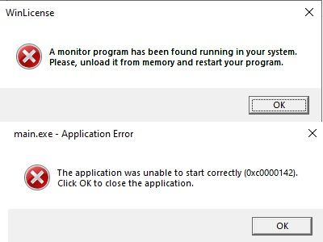

Page 1 of 1
[Win License] Main.exe App error - 0xc0000142.
Posted: Thu Jun 01, 2023 2:25 pm
by Ainseland
1st error: A monitor program has been found running in your system. Please, unload it from memory and restart your program.
2nd error: 0xc0000142.
Game app: MU online
 https://ibb.co/5hpp1BP
https://ibb.co/5hpp1BP
Sanboxie+ Error for MU online game app - (0xc0000142).
Posted: Thu Jun 01, 2023 7:42 pm
by Ainseland
1st error
Win License:
A monitor program has been found running in your system.
Please, unload it from memory and restart your program.
2nd error.
main.exe - Application Error: MU online.exe
The application was unable to start correctly (0xc0000142).
Click OK to close the application.
Is there any fix to this?

Re: [Win License] Main.exe App error - 0xc0000142.
Posted: Sat Jun 10, 2023 9:44 am
by bastik-1001
The program appears to be detecting Sandboxie being used to monitor it. Often that is done as a form of DRM or as an attempt to ensure the application is not being tampered with, for things that try to work around anti-cheat.
You may try to get it to work with
https://github.com/VeroFess/SbieHide, but be aware that this can be detected as well.